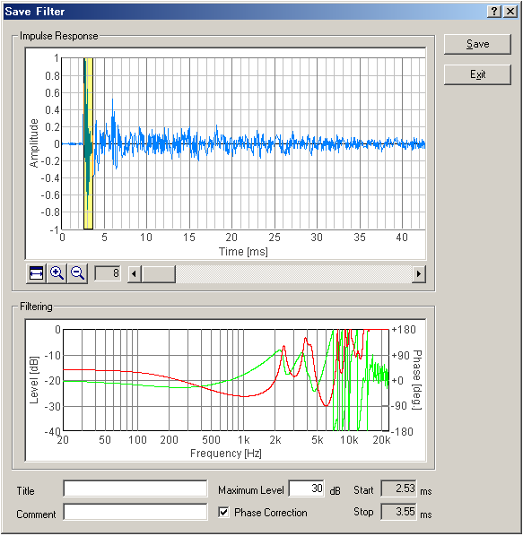

DSSF3 > RA > Reference Manual > Impulse Response

| Fields | Description |
|---|---|
| Impulse Response | Measured impulse response is shown. The yellow area represents a filtering range. Adjust the boundary of the yellow area, so as to include the part which is thought of as the impulse response of the measurement system within the yellow area. Drag left and right borderlines when the mouse cursor shape changes to "<-| |->" over borderline. |
| Filtering | Characteristics (Level, Phase) of the inverse filter corresponding to the impulse response which is cut out from (1) are indicated. Red curve is characteristic of sound pressure level, and green curve is the phase characteristic. |
| Title | Input the name for the present inverse filter. |
| Comment | Input the comment on the present inverse filter. |
| Maximum Level | Sets the SPL limit for correction of the inverse filter. |
| Phase Correction | When this box is checked, both SPL and phase are corrected. If not, only SPL is corrected. Ordinarily, it should be checked. |
| Save | Saves the inverse filter. |
| Exit | Closes this dialog. |

| Field | Description |
|---|---|
| (List box) | The inverse filters which have been stored are listed. |
| Impulse Response | Measured impulse response is shown. The yellow area represents a filtering range. Adjust the boundary of the yellow area, so as to include the part which is thought of as the impulse response of the measurement system within the yellow area. Drag left and right borderlines when the mouse cursor shape changes to "<-| |->" over borderline. |
| Filtering | Characteristics (Level, Phase) of the inverse filter corresponding to the impulse response which is cut out from (2) are indicated. Red curve is characteristic of sound pressure level, and green curve is the phase characteristic. |
| Title | The name of the present inverse filter. |
| Comment | The comment on the present inverse filter. |
| Maximum Level | Sets the SPL limit for correction of the inverse filter. |
| Phase Correction | When this box is checked, both SPL and phase are corrected. If not, only SPL is corrected. Ordinarily, it should be checked. |
| OK | Applies the selected inverse filter to the measurement. |
| Cancel | Closes this dialog without doing anything. |
| Overwrite | Saves the altered inverse filter. |
| Delete | Deletes the selected inverse filter. |
DSSF3 > RA > Reference Manual > Impulse Response